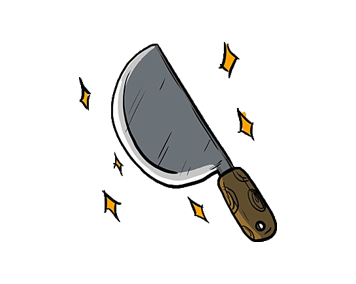
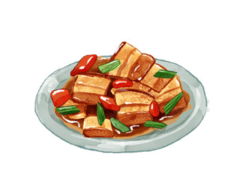
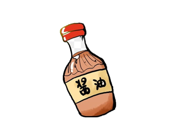
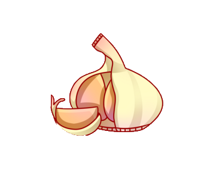
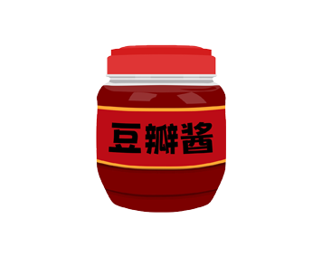
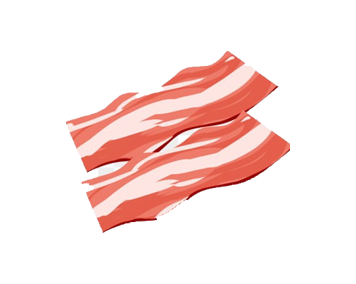

1
2
3
回锅肉
回锅肉起源四川农村地区,是四川传统菜式中家常菜肴的代表菜之一,其制作原料主要有猪后臀肉、青椒、蒜苗等，所谓“回锅”，是指食材先煮后炒，两次入锅，二次烹调之意。
制 作 步 骤
尝 试 一 下
其 他 菜 品
尝试回忆起回锅肉的制作步骤
按照正确的顺序点选卡片
带皮五花肉冷水下锅加入葱段、姜片，花椒7、8粒，黄酒适量煮开

将肉切成薄片，姜、蒜切片，葱切成斜段

下入青蒜，点少许料酒，糖调好味道即可出锅

适当的加入少许酱油或甜面酱调色，与肉片一起翻炒均匀

将青蒜的白色部分先用刀拍一下，然后全部斜切成段备用
炒锅上火，加很少的油煸香辣椒、花椒

将肉拨到锅一边，下入豆瓣酱（可以先剁细）炒出红油

下入肉片煸炒，至肉片颜色变透明，边缘略微卷起
撇净浮沫，煮至八成熟，取出自然冷却（筷子可插入即可）
结果显示